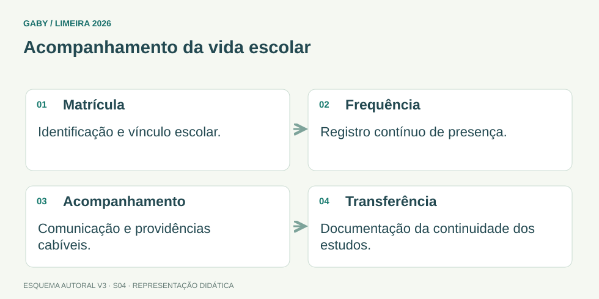

Objetivos do módulo
- Compreender matrícula como ato formal de vínculo escolar.
- Entender a importância do controle de frequência.
- Relacionar transferência à continuidade de estudos.
- Aplicar conferência documental e atendimento correto aos responsáveis.
- Identificar quem requer e quem defere a matrícula, as etapas, os documentos e o que fazer quando falta documento (certidão de nascimento, carteira de vacinação).
- Aplicar a frequência mínima da LDB (75% das horas letivas no fundamental e no médio; 60% na pré-escola) e os deveres de informar a família e notificar o Conselho Tutelar.
- Distinguir classificação (promoção, transferência e avaliação), reclassificação e aproveitamento de estudos.
- Conhecer as garantias de acesso: direito público subjetivo, vaga próxima da residência, irmãos na mesma escola, dependentes de mulher em situação de violência doméstica, ausência por motivo religioso e educação bilíngue de surdos.
- Reconhecer os procedimentos da referência paulista cobrados em prova: SED e RA, ficha cadastral, diário de classe, compensação de ausências, histórico de transferência e documento de autenticidade duvidosa.
Acompanhamento da vida escolar

Descrição em texto do esquema
- Matrícula: Identificação e vínculo escolar.
- Frequência: Registro contínuo de presença.
- Acompanhamento: Comunicação e providências cabíveis.
- Transferência: Documentação da continuidade dos estudos.
Oficina visual · aplique o esquema
Um aluno tem faltas reiteradas. É correto registrar transferência apenas para retirar seu nome da turma?
Atividade autoral complementar da V3. Registre sua resposta; a resolução está no arquivo de gabarito e revisão.
Mapa do conteúdo
- 1. Matrícula
- 2. Frequência
- 3. Comunicação e acompanhamento
- 4. Transferência
- 5. Atendimento em situações problemáticas
- 6. Acesso à escola: direitos e deveres na matrícula
- 7. Classificação, reclassificação e aproveitamento de estudos
- 8. Ausência por motivo religioso (LDB, art. 7º-A)
- 9. Educação bilíngue de surdos e matrícula
1. Matrícula
A matrícula formaliza o vínculo do estudante com a unidade escolar. O procedimento envolve identificação, documentação exigida, enquadramento na etapa/ano adequado e registro nos sistemas e livros/documentos previstos pela rede.
O servidor não deve criar exigências arbitrárias. Deve seguir legislação e normas da rede, orientar claramente o responsável e registrar pendências de modo adequado.
Matrícula: o marco inicial da vida escolar
A vida escolar do estudante inicia-se a partir da matrícula. É ela que cria o vínculo com a escola e abre os registros que vão acompanhá-lo em todo o percurso: ficha cadastral, diário de classe, rendimento e, mais tarde, histórico escolar. Avaliações, atividades e documentos de fim de período vêm depois dela.
Quem pede e quem decide
- Requerimento: a matrícula é requerida pelo próprio estudante, quando maior de 18 anos, ou pelos pais ou responsável legal. Uma adulta de 32 anos que quer voltar a estudar na EJA faz o pedido sozinha; para uma criança de 9 anos, quem requer é o responsável.
- Deferimento: quem defere (aprova) a matrícula é a direção da escola. A secretaria atende, confere os documentos e faz o registro, mas não substitui a decisão do diretor.
As duas etapas da matrícula
No Manual de Procedimentos de Vida Escolar da SEDUC-SP (2020), muito usado pelas bancas, a escrituração da matrícula tem duas etapas principais:
- entrega da documentação pelo estudante ou responsável, que fica arquivada no prontuário do aluno;
- registro no Cadastro de Alunos, que na rede estadual fica na plataforma Secretaria Escolar Digital (SED).
Documentos listados pelo manual: cópia da certidão de nascimento ou de casamento; cópia do RG do estudante, se ele tiver; comprovante de endereço ou declaração; e, na matrícula por transferência, o histórico escolar de transferência, quando necessário (ver seção 4).
Faltou documento: a matrícula é feita mesmo assim
O acesso à educação básica obrigatória é direito público subjetivo (LDB, art. 5º, caput; CF, art. 208, § 1º; ver seção 6). Por isso, a escola não nega nem adia a matrícula por falta de um papel: matricula, registra a pendência e orienta a regularização.
- Sem certidão de nascimento: o manual paulista diz que, ainda que o estudante não tenha a documentação, a escola não deve negar o acesso à educação. Se o estudante for menor de idade e não tiver a certidão de nascimento, efetiva-se a matrícula e os responsáveis são encaminhados ao Conselho Tutelar para as providências cabíveis.
- Sem histórico de quem vem transferido: o registro da transferência é feito e o histórico vem depois, quando necessário. Enquanto ele não chega, o aluno estuda normalmente.
Carteira de vacinação (Lei estadual SP 17.252/2020)
A Lei estadual 17.252/2020, de São Paulo, torna obrigatória a apresentação da carteira de vacinação dos alunos de até 18 anos no ato da matrícula, em todas as escolas das redes pública e particular que ofereçam educação infantil, ensino fundamental e ensino médio (art. 1º). Pelo próprio texto, vale “em todo o território estadual”, o que inclui as escolas municipais de Limeira.
| Dispositivo | O que determina | Como cai |
|---|---|---|
| Art. 1º | Carteira de vacinação obrigatória na matrícula, alunos de até 18 anos, redes pública e particular. | O documento que comprova a vacinação é a carteira de vacinação, não o RG nem o comprovante de endereço. |
| Art. 2º | A carteira deve estar atualizada, com as vacinas obrigatórias dos calendários de vacinação da criança e do adolescente. | Atualizada = com todas as vacinas obrigatórias para a idade. |
| Art. 3º | Só fica dispensado da vacinação quem apresenta atestado médico de contraindicação explícita. | Dispensa exige atestado médico. |
| Art. 4º | A falta da carteira ou de alguma vacina não impossibilita a matrícula; o responsável regulariza em até 60 dias, sob pena de comunicação imediata ao Conselho Tutelar. | A matrícula é feita; o prazo é de 60 dias. |
Depois dos documentos: RA, SED, regimento e ficha cadastral
Com a documentação em mãos, o roteiro do manual paulista é: a) consultar o RA do estudante na SED, conferir e atualizar os dados; b) efetivar a matrícula na SED; c) dar ciência do regimento escolar ao estudante ou ao seu responsável legal, para que conheça as regras da escola.
- SED (Secretaria Escolar Digital): plataforma da SEDUC-SP em que a rede estadual registra matrícula, ficha cadastral, movimentação, diário de classe e rendimento escolar.
- RA: número que identifica o estudante na plataforma (o manual de 2020 o chama de Registro do Estudante; é conhecido também como Registro do Aluno). Antes de gerar um, a secretaria verifica se o estudante já possui RA; só quando ele não tem é que se inserem os dados pessoais para gerá-lo. Criar outro RA para quem já tem um (por exemplo, a cada transferência) produz duplicidade de cadastro.
- Ficha cadastral: preenchida no ato da matrícula, inscreve o estudante no quadro discente da escola. Traz os dados pessoais e, se ele veio por transferência, a escola de origem; ao longo da vida escolar, registra a trajetória. Os dados são transcritos na plataforma. Se o sistema informatizado estiver inacessível no momento do atendimento, a ficha é preenchida manualmente e os dados são lançados na plataforma depois. O atendimento não é adiado nem anotado em papel avulso ou celular pessoal.
2. Frequência
Frequência não é mera estatística: integra a vida escolar e pode produzir efeitos pedagógicos e legais. A escola deve controlar presença conforme regimento e normas do sistema.
Registros devem ser tempestivos e consistentes. Divergências entre diário, sistema e documentos finais precisam ser tratadas antes do encerramento.
Frequência mínima na LDB
| Etapa | Dispositivo | O que determina | Como cai |
|---|---|---|---|
| Ensino fundamental e ensino médio | LDB, art. 24, VI | O controle de frequência fica a cargo da escola, conforme o regimento e as normas do sistema de ensino; para aprovação, exige-se frequência mínima de 75% do total de horas letivas. | A base de cálculo é o total de horas letivas, não os dias de prova nem as notas. |
| Pré-escola (educação infantil) | LDB, art. 31, IV | Controle de frequência pela instituição de educação pré-escolar, com frequência mínima de 60% do total de horas. | Não se aplica à pré-escola o índice de 75%. Na educação infantil a avaliação não tem objetivo de promoção (art. 31, I). |
Como calcular: multiplique o total de horas letivas pelo percentual. No ensino médio, a carga mínima anual é de 1.000 horas (LDB, art. 24, I); 75% disso são 750 horas de presença, e o aluno pode faltar até 250 horas. Numa pré-escola com 900 horas no ano, 60% são 540 horas de presença.
Quem lança a frequência: o diário de classe
No manual paulista, o diário de classe é o instrumento de lançamento e controle de frequência, aproveitamento e conteúdo lecionado em todos os dias letivos. A digitação do diário é de exclusiva competência e responsabilidade do professor, que faz os registros diariamente na SED. À secretaria cabe acompanhar o lançamento de notas e frequência pelos professores, quando necessário, e avisar quando houver atraso. O servidor da secretaria não digita presenças no lugar do professor.
3. Comunicação e acompanhamento
A legislação educacional atribui relevância ao acompanhamento da frequência. Conforme a situação e as normas aplicáveis, a escola comunica responsáveis e adota providências institucionais. O secretário atua garantindo registro e fluxo documental adequado.
Deveres de informação e de notificação
| Dispositivo | O que determina | Como cai |
|---|---|---|
| LDB, art. 5º, § 1º, III | O poder público deve zelar, junto aos pais ou responsáveis, pela frequência à escola. | Frequência é acompanhada em conjunto com a família. |
| LDB, art. 12, VII | A escola informa pai e mãe, conviventes ou não com seus filhos, e, se for o caso, os responsáveis legais, sobre a frequência e o rendimento dos alunos e sobre a execução da proposta pedagógica. | O pai ou a mãe que não mora com o filho também tem direito à informação. Isso não autoriza passar dados a terceiros sem vínculo. |
| LDB, art. 12, VIII, a | A escola notifica ao Conselho Tutelar do Município a relação dos alunos com faltas acima de 30% do percentual permitido em lei. | Os 30% incidem sobre o percentual de faltas permitido, não sobre a carga horária total. |
| LDB, art. 12, VIII, b | Notifica também as ocorrências e os dados de casos de violência que envolvam alunos, especialmente automutilações, tentativas de suicídio e suicídios consumados. | Desde a Lei 15.231/2025, o inciso VIII tem duas alíneas. |
| ECA, art. 56 | Os dirigentes de estabelecimentos de ensino fundamental comunicam ao Conselho Tutelar: I – maus-tratos envolvendo alunos; II – reiteração de faltas injustificadas e evasão escolar, esgotados os recursos escolares; III – elevados níveis de repetência; IV – negligência, abuso ou abandono (incluído pela Lei 15.240/2025). | A condição “esgotados os recursos escolares” é do inciso II: a escola age primeiro com seus próprios meios e, sem êxito, comunica. |
Como ler o art. 12, VIII, a: no fundamental e no médio o aluno precisa de 75% de presença, então o percentual de faltas permitido é 25% das horas letivas. Trinta por cento desse limite correspondem a 7,5% das horas letivas. O exemplo 5 faz a conta.
Compensação de ausências (referência paulista)
Compensação de ausências é um conjunto de atividades programadas ao longo do ano para suprir faltas e sanar as lacunas de aprendizagem que elas causaram. O manual paulista organiza assim:
- Tem direito à compensação o estudante que ultrapassa 20% do total de aulas dadas no bimestre, após requerimento e justificativa. Os critérios e procedimentos ficam no regimento escolar.
- O controle da frequência é feito pelo diário de classe dos professores, que adotam as medidas para compensar ausências.
- Para garantir os 75%, a escola: I – alerta e mantém os pais informados; II – toma providências internas com os estudantes faltosos e os professores; III – comunica, por escrito, aos pais, ao Conselho Tutelar e à Vara da Infância e da Juventude quando o estudante atinge 20% de faltas, ao final de cada bimestre; IV – se não houver êxito, remete ofício à Diretoria de Ensino com o histórico dos fatos e as providências adotadas.
- O processo ocorre ao final do 1º, do 2º e do 3º bimestres; no 4º bimestre, a escola acompanha as ausências e faz os encaminhamentos.
- Encerrado o processo, as aulas compensadas são informadas à secretaria da escola para os devidos registros.
4. Transferência
Transferência é movimentação do aluno entre unidades/sistemas e exige documentação que permita continuidade dos estudos. O processo deve preservar informações já consolidadas e evitar duplicidade ou lacunas de matrícula.
Ao receber aluno transferido, confira documentos de origem, período cursado, resultados e demais elementos necessários ao correto posicionamento escolar.
Quando a transferência pode ocorrer
A transferência não tem época fixa: pode ser pedida no decorrer do ano letivo, e não só no início ou no fim. O manual paulista trata do histórico emitido quando o estudante muda de escola durante o percurso escolar e admite que o estudante recebido por transferência, inclusive de outro país, peça reclassificação em qualquer época do período letivo. Nenhuma das normas desta aula condiciona a transferência ao fim do ano, ao encerramento das atividades ou a um setor financeiro.
Movimentação escolar
Movimentação escolar é o conjunto de ocorrências que mudam a situação do estudante na escola: transferências, ausências, abandono e outras. No manual paulista, cabe à secretaria lançar a movimentação na plataforma e expedir comunicados à equipe escolar sobre ela. Registro atrasado deixa o aluno em duas turmas ao mesmo tempo, ou em nenhuma.
Documentos de quem sai e de quem chega
| Ponto | Regra | Fonte |
|---|---|---|
| Quem expede | Cabe a cada instituição de ensino expedir históricos escolares, declarações de conclusão de série e diplomas ou certificados de conclusão de cursos, com as especificações cabíveis. A escola de origem expede o histórico dos estudos feitos nela; a de destino não reconstrói a vida escolar a partir de declaração verbal. | LDB, art. 24, VII |
| Documento essencial na matrícula por transferência | Histórico escolar de transferência, que comprova a trajetória e permite posicionar o aluno. Na rede estadual, a transferência é registrada na SED e o histórico é apresentado depois, quando necessário. | Manual SEDUC-SP, p. 12 |
| Transferência durante o ano | O histórico traz, no verso, a frequência e a avaliação do desempenho até a data da solicitação da transferência. Não se lançam notas futuras nem conclusão da etapa. | Manual SEDUC-SP, p. 102 |
| Termo no campo do diretor | Para concluintes, usa-se “Certificado”; na transferência, usa-se “Declaração”. | Manual SEDUC-SP, p. 102 |
| 2ª via gerada manualmente | Deve ser cópia fidedigna da primeira, com a nomenclatura das disciplinas vigente à época dos estudos e “2ª via” grafado no alto. Históricos transcrevem fielmente nomenclaturas, carga horária e observações dos documentos anteriores, sem emendas nem rasuras. | Manual SEDUC-SP, p. 100 |
Dúvida sobre a autenticidade do histórico (referência paulista)
Quando a escola que recebe o aluno desconfia da exatidão, da autenticidade ou da legitimidade do documento, o manual paulista manda apurar antes de decidir:
- A escola oficia a Diretoria de Ensino da circunscrição da escola que supostamente expediu o documento e pede a verificação.
- A Diretoria de Ensino protocola o pedido em autos próprios e a Supervisão de Ensino faz a análise.
- Comprovada a inautenticidade, os autos voltam à escola solicitante, que comunica o fato a quem apresentou o documento e o convoca para prestar declarações, com ampla defesa e produção de provas.
- Se o interessado não comparecer ou se as alegações forem infundadas, publica-se portaria do diretor anulando o documento; depois, a escola que recebeu o aluno anula, também por portaria, os atos escolares praticados com base nele.
Documento de escola de outro Estado: o diretor pede a conferência diretamente à Secretaria Estadual de Educação de lá. O manual diz ainda que não há necessidade de lavrar boletim de ocorrência.
5. Atendimento em situações problemáticas
Quando faltar documento ou houver conflito de informação, o servidor deve orientar com base nas normas e encaminhar situações excepcionais à autoridade competente. Não deve negar atendimento com base em preferência pessoal nem “resolver” alterando dados sem respaldo.
6. Acesso à escola: direitos e deveres na matrícula
As normas desta seção são federais e nacionais (Constituição, LDB, ECA e Lei Maria da Penha): valem para a rede municipal de Limeira.
Direito público subjetivo e idade da matrícula
Direito público subjetivo é o direito que a pessoa pode exigir do poder público, inclusive na Justiça. Pela LDB, art. 5º, caput, qualquer cidadão, grupo de cidadãos, associação comunitária, organização sindical, entidade de classe ou outra legalmente constituída, e ainda o Ministério Público, pode acionar o poder público para exigir o acesso à educação básica obrigatória. A Constituição diz o mesmo do ensino obrigatório e gratuito (CF, art. 208, § 1º).
| Dispositivo | O que determina | Como cai |
|---|---|---|
| LDB, art. 4º, I | Educação básica obrigatória e gratuita dos 4 aos 17 anos de idade: pré-escola, ensino fundamental e ensino médio. | A obrigatoriedade não começa aos 6 nem aos 7 anos. |
| LDB, art. 4º, X | Vaga na escola pública de educação infantil ou de ensino fundamental mais próxima de sua residência a toda criança a partir do dia em que completar 4 anos. | Proximidade da residência é garantia legal. |
| LDB, art. 6º | Dever dos pais ou responsáveis de matricular as crianças na educação básica a partir dos 4 anos de idade. | O dever é da família; o do poder público é oferecer a vaga. |
| ECA, art. 53, V (redação da Lei 13.845/2019) | Acesso à escola pública e gratuita próxima da residência, garantindo-se vagas no mesmo estabelecimento a irmãos que frequentem a mesma etapa ou ciclo de ensino da educação básica. | A garantia dos irmãos vale para a mesma etapa ou ciclo da educação básica; não se restringe a gêmeos nem alcança a educação superior. |
Deveres do poder público (LDB, art. 5º)
| Dispositivo | O que determina | Como cai |
|---|---|---|
| § 1º, I | Recensear anualmente as crianças e adolescentes em idade escolar e os jovens e adultos que não concluíram a educação básica. | O recenseamento alcança justamente quem está fora da escola, não só os já matriculados. |
| § 1º, II | Fazer-lhes a chamada pública. | Convocação aberta do público da educação obrigatória. |
| § 1º, III | Zelar, junto aos pais ou responsáveis, pela frequência à escola. | Ver seção 3. |
| § 1º, IV (incluído pela Lei 14.685/2023) | Divulgar a lista de espera por vagas na educação básica da rede, inclusive creches, por ordem de colocação e, sempre que possível, por unidade escolar, e divulgar os critérios de elaboração da lista. | Divulga-se a ordem e os critérios usados para montar a lista. |
| § 5º | Para garantir a obrigatoriedade do ensino, o poder público cria formas alternativas de acesso aos diferentes níveis de ensino, independentemente da escolarização anterior. | Falta de estudos anteriores não fecha a porta da escola. |
Dependentes de mulher em situação de violência doméstica (Lei 11.340/2006)
A Lei Maria da Penha (Lei 11.340/2006), art. 9º, § 7º, dá à mulher em situação de violência doméstica e familiar prioridade para matricular seus dependentes na instituição de educação básica mais próxima de seu domicílio, ou para transferi-los para ela. Basta apresentar documento que comprove o registro da ocorrência policial ou o processo de violência doméstica e familiar em curso. O § 8º torna sigilosos os dados da mulher e dos dependentes matriculados ou transferidos nessas condições. Os dois parágrafos foram incluídos pela Lei 13.882/2019.
Na secretaria, isso significa: o sigilo cobre a mãe e os filhos; não depende de novo pedido a cada ano; e os dados não são informados a familiares, colegas ou visitantes, só às autoridades indicadas na lei.
7. Classificação, reclassificação e aproveitamento de estudos
Classificar é decidir em que série ou etapa o estudante vai estudar. A LDB, art. 24, II, permite a classificação em qualquer série ou etapa, exceto a primeira do ensino fundamental. Na primeira série o critério é a idade: o ensino fundamental começa aos 6 anos (LDB, art. 32).
| Art. 24, II | Hipótese | Exemplo |
|---|---|---|
| a) por promoção | Alunos que cursaram, com aproveitamento, a série ou fase anterior na própria escola. | Aluna aprovada no 5º ano segue para o 6º na mesma escola. |
| b) por transferência | Candidatos procedentes de outras escolas. | Aluno chega de outro município com o 3º ano concluído e é classificado no 4º. |
| c) independentemente de escolarização anterior | Mediante avaliação feita pela escola, que defina o grau de desenvolvimento e experiência do candidato e permita sua inscrição na série ou etapa adequada, conforme regulamentação do sistema de ensino. | Adolescente de 14 anos sem nenhum comprovante de estudos faz avaliação e é inscrito no ano compatível. |
A alínea c também serve a quem procura a EJA sem documentos: a escola matricula e posiciona o estudante pela avaliação, segundo o regimento e as normas do sistema.
Reclassificação (LDB, art. 23, § 1º)
A escola pode reclassificar os alunos, inclusive quando se trata de transferências entre estabelecimentos situados no País e no exterior, tendo como base as normas curriculares gerais. Reclassificar é reposicionar o estudante em série diferente daquela em que está, ou em que seria colocado pelo documento de origem, depois de avaliar o que ele já sabe. Um aluno que chega de uma escola do exterior, com estudos organizados de outro modo, pode ser reclassificado com base nas normas curriculares gerais.
Formas de matrícula na referência paulista
| Forma | Base |
|---|---|
| Ingresso | No 1º ano do ensino fundamental, com base apenas na idade. |
| Classificação | Idade, série ou ano e competência. |
| Reclassificação | Processo avaliativo, sendo fundamental obedecer à correlação idade/ano/série. |
No manual paulista, a reclassificação para série mais avançada usa a correspondência idade/ano/série e uma avaliação de competência nas disciplinas da Base Nacional Comum Curricular e de redação em Língua Portuguesa. Pode partir de proposta dos professores, com base em avaliação diagnóstica, ou de requerimento do estudante ou responsável ao diretor, com defasagem mínima de 2 anos entre idade e ano/série. Prazos: estudantes da própria escola pedem até o fim do primeiro mês letivo; estudantes recebidos por transferência, inclusive de outro país, em qualquer época do período letivo; a avaliação é aplicada em até 15 dias após o pedido. Não se limita ao ensino médio.
Aproveitamento de estudos (LDB, art. 24, V, d)
Entre os critérios de verificação do rendimento escolar, a LDB, art. 24, V, inclui o aproveitamento de estudos concluídos com êxito (alínea d), ao lado da aceleração de estudos para alunos com atraso escolar (b) e do avanço nos cursos e séries mediante verificação do aprendizado (c). Estudos já concluídos com êxito, em outra escola ou etapa, podem ser aproveitados conforme o regimento e as normas do sistema, em vez de repetidos sem análise.
8. Ausência por motivo religioso (LDB, art. 7º-A)
O art. 7º-A foi incluído na LDB pela Lei 13.796/2019. Vale para aluno regularmente matriculado em instituição pública ou privada, de qualquer nível. Ele protege a liberdade de consciência e de crença: quem não pode, pelos preceitos da sua religião, fazer prova ou ter aula em determinado dia pode faltar, desde que cumpra uma prestação alternativa.
| Dispositivo | O que determina | Como cai |
|---|---|---|
| Art. 7º-A, caput | Mediante requerimento prévio e motivado, o aluno pode ausentar-se de prova ou aula marcada para dia em que sua religião veda essas atividades. A instituição atribui, a seu critério e sem custos para o aluno, uma prestação alternativa (CF, art. 5º, VIII). | O pedido é antecipado e justificado; a alternativa não custa nada ao aluno. |
| Art. 7º-A, I | Prova ou aula de reposição em data alternativa, no turno de estudo do aluno ou em outro horário agendado com sua anuência expressa. | Fora do turno do aluno, só com a concordância expressa dele. |
| Art. 7º-A, II | Trabalho escrito ou outra atividade de pesquisa, com tema, objetivo e data de entrega definidos pela instituição. | É atividade acadêmica, não doação, compra nem dispensa. |
| § 1º | A prestação alternativa observa os parâmetros curriculares e o plano de aula do dia da ausência. | O conteúdo é o da aula perdida. |
| § 2º | Cumprida a prestação alternativa, ela substitui a obrigação original para todos os efeitos, inclusive a regularização do registro de frequência. | A falta deixa de contar como falta. |
| § 3º | As instituições tinham 2 anos para implementar as adaptações. | Prazo de adaptação. |
| § 4º | A regra não se aplica ao ensino militar referido no art. 83 da LDB. | Exceção expressa. |
Papel da secretaria: protocolar o requerimento, encaminhá-lo à coordenação e, cumprida a prestação, garantir que a frequência e o resultado sejam regularizados no registro.
9. Educação bilíngue de surdos e matrícula
A Lei 14.191/2021 incluiu na LDB o Capítulo V-A, “Da Educação Bilíngue de Surdos”, e outros dispositivos sobre o tema. É lei nacional e vale para a rede municipal.
| Dispositivo | O que determina | Como cai |
|---|---|---|
| LDB, art. 60-A, caput | Educação bilíngue de surdos é a modalidade de educação escolar oferecida em Língua Brasileira de Sinais (Libras), como primeira língua, e em português escrito, como segunda língua. É oferecida em escolas bilíngues de surdos, classes bilíngues de surdos, escolas comuns ou polos de educação bilíngue de surdos, para educandos surdos, surdo-cegos, com deficiência auditiva sinalizantes, surdos com altas habilidades ou superdotação ou com outras deficiências associadas, que optem pela modalidade. | Libras é a primeira língua; português escrito, a segunda. É uma opção do estudante. |
| Art. 60-A, § 1º | Quando necessário, há serviços de apoio educacional especializado, como o atendimento educacional especializado bilíngue. | Apoio às especificidades linguísticas. |
| Art. 60-A, § 2º | A oferta começa ao zero ano, na educação infantil, e se estende ao longo da vida. | Começa desde o nascimento. |
| Art. 60-A, § 3º | A modalidade é efetivada sem prejuízo das prerrogativas de matrícula em escolas e classes regulares, conforme decidir o estudante ou, no que couber, seus pais ou responsáveis, e das garantias da Lei 13.146/2015 (Estatuto da Pessoa com Deficiência), que incluem, para os surdos oralizados, o acesso a tecnologias assistivas. | A existência da escola bilíngue não obriga o estudante surdo a deixar a classe regular: a escolha é dele ou da família. |
| Art. 60-B | Os sistemas de ensino asseguram a esses educandos materiais didáticos e professores bilíngues com formação e especialização adequadas, em nível superior; na contratação e avaliação desses professores, são ouvidas as entidades representativas das pessoas surdas. | Professor bilíngue com nível superior. |
| Arts. 78-A e 79-C | Os sistemas de ensino, em regime de colaboração, desenvolvem programas integrados de ensino e pesquisa de educação bilíngue e intercultural para surdos (art. 78-A); a União apoia técnica e financeiramente esses programas, planejados com participação das comunidades surdas (art. 79-C). | Programas e apoio da União. |
Na matrícula, a secretaria registra a opção do estudante ou da família (classe regular, classe bilíngue ou escola bilíngue) e as necessidades de apoio, sem decidir por eles.
Exemplos resolvidos passo a passo
Exemplo 1
Situação: Responsável chega sem um documento exigido e pergunta como regularizar.
Exemplo 2
Situação: Sistema mostra 80% de frequência e diário 74%.
Exemplo 3
Situação: Aluno transferido chega com documentação parcial.
Exemplo 4
Situação: No ensino médio, o ano letivo da escola tem 1.000 horas. Bruno faltou 230 horas; Carla faltou 260 horas. Quem cumpre a frequência mínima para aprovação?
Exemplo 5
Situação: Uma escola de ensino fundamental tem 800 horas letivas no ano. A partir de quantas horas de falta o aluno entra na relação enviada ao Conselho Tutelar pelo art. 12, VIII, a, da LDB?
Exemplo 6
Situação: Dois irmãos chegam do exterior. A mais velha traz documentos da escola estrangeira, organizados por ciclos diferentes dos brasileiros. O mais novo, de 12 anos, não tem nenhum comprovante de estudos. Como posicionar cada um?
Exemplo 7
Situação: Uma estudante avisa, na segunda-feira, por escrito e com justificativa, que sua religião não permite atividades escolares no sábado, dia marcado para uma avaliação. A escola propõe aplicar a prova numa quarta-feira à noite, mas ela estuda de manhã.
Pegadinhas e erros frequentes
- Confundir matrícula com simples preenchimento de formulário.
- Alterar frequência para “ajudar” aluno.
- Fechar período com divergências não apuradas.
- Negar orientação quando há pendência documental.
- Tratar transferência como cancelamento da trajetória anterior.
- Aplicar 75% à pré-escola: lá o mínimo é 60% do total de horas (LDB, art. 31, IV).
- Calcular a frequência sobre dias de prova ou sobre notas: a base é o total de horas letivas (art. 24, VI).
- Ler o art. 12, VIII, a, como “30% da carga horária”: são 30% do percentual de faltas permitido.
- Achar que a condição “esgotados os recursos escolares” vale para todos os incisos do art. 56 do ECA: ela é do inciso II.
- Achar que só o genitor que mora com o filho recebe informações: o art. 12, VII, inclui pai e mãe conviventes ou não.
- Aplicar a classificação à primeira série do ensino fundamental: ela é exceção; lá o critério é a idade.
- Confundir promoção (série anterior na própria escola) com transferência (aluno vindo de outra escola).
- Negar ou adiar a matrícula por falta de certidão de nascimento ou de carteira de vacinação.
- Achar que a obrigação de matricular começa aos 6 ou aos 7 anos: começa aos 4 anos (LDB, art. 6º).
- Tratar a ausência religiosa como dispensa: há prestação alternativa, sem custo, que regulariza a frequência. A regra não vale para o ensino militar.
- Achar que a educação bilíngue de surdos obriga a matrícula em escola bilíngue: o art. 60-A, § 3º, preserva a matrícula em escolas e classes regulares.
- Restringir à mulher o sigilo da Lei Maria da Penha: ele cobre também os dependentes matriculados ou transferidos.
- Gerar novo RA a cada transferência, usar “Certificado” no histórico de transferência ou atualizar a nomenclatura das disciplinas na 2ª via (referência paulista).
- Tomar os 20% por bimestre da compensação de ausências como regra da LDB: são parâmetro do manual paulista.
Resumo de prova
- Matrícula cria vínculo escolar formal.
- Frequência precisa de registro confiável.
- Transferência preserva continuidade da vida escolar.
- Pendências são tratadas conforme norma, não por improviso.
- Divergências devem ser resolvidas antes de documentos finais.
- A vida escolar começa na matrícula: requerida pelo estudante maior de 18 anos ou pelo responsável e deferida pela direção.
- Duas etapas: entrega da documentação e registro no Cadastro de Alunos (na rede estadual, na SED).
- Acesso é direito público subjetivo (LDB, art. 5º; CF, art. 208, § 1º): sem certidão, matricula e encaminha ao Conselho Tutelar.
- Carteira de vacinação (Lei SP 17.252/2020): obrigatória até 18 anos; a falta não impede a matrícula; 60 dias para regularizar.
- Pais matriculam a partir dos 4 anos (LDB, art. 6º); vaga próxima da residência (LDB, art. 4º, X; ECA, art. 53, V, com irmãos na mesma escola).
- Poder público: recenseia, faz chamada pública, zela pela frequência, divulga lista de espera com critérios e cria formas alternativas de acesso (LDB, art. 5º).
- Frequência: 75% das horas letivas no fundamental e no médio (art. 24, VI); 60% do total de horas na pré-escola (art. 31, IV).
- Conselho Tutelar: faltas acima de 30% do percentual permitido (LDB, art. 12, VIII, a); faltas reiteradas e evasão, esgotados os recursos escolares (ECA, art. 56, II).
- Classificação (art. 24, II): promoção, transferência ou avaliação, exceto na primeira série do fundamental. Reclassificação (art. 23, § 1º), inclusive do exterior. Aproveitamento de estudos (art. 24, V, d).
- Ausência religiosa (art. 7º-A): requerimento prévio e motivado; reposição ou trabalho; vale para todos os efeitos; fora o ensino militar.
- Educação bilíngue de surdos (art. 60-A): Libras como primeira língua e português escrito como segunda; matrícula regular preservada (§ 3º).
- Lei Maria da Penha (art. 9º, §§ 7º e 8º): prioridade para matricular ou transferir dependentes; dados sigilosos.
- Transferência a qualquer época; cada escola expede seus históricos (LDB, art. 24, VII).
- Referência paulista: RA consultado antes de gerar; ficha manual se o sistema cair; diário é do professor; compensação a partir de 20% no bimestre; “Declaração” na transferência; 2ª via fiel; dúvida de autenticidade → ofício à Diretoria de Ensino.
Exercícios do módulo
Resolva sem consultar o arquivo de gabarito. As questões são autorais e construídas para treinar os conceitos do edital.
- mero recado informal
- controle de estoque
- documento exclusivo do professor
- ato formal de vínculo do estudante com a unidade
- estimativa pessoal
- memória do aluno
- fidelidade aos registros e normas
- interesse de alterar resultados
- sempre se escolhe o diário sem conferir
- deve ser apurada antes do fechamento
- deve ser ignorada
- sempre se escolhe o sistema
- garantir continuidade dos estudos em outra unidade
- apagar trajetória anterior
- substituir histórico por recado
- eliminar matrícula
- inventar exigências
- recusar qualquer explicação
- alterar dados
- seguir as normas e informar procedimento de regularização
- pode ser alterado verbalmente
- não integra vida escolar
- é responsabilidade institucional da escola conforme normas
- é opcional em qualquer situação
- nenhum dado anterior
- período cursado, resultados e identificação
- apenas endereço
- somente telefone
- compromete a integridade da escrituração
- é prática recomendada
- não tem consequência
- é obrigação do secretário
- autoriza criação de regra pessoal
- sempre impede qualquer atendimento
- deve ser escondida
- deve ser tratada conforme procedimento da rede
- ausência de impacto escolar
- serem atos de almoxarifado
- necessidade de registros formais e conferência
- dispensa de documentação
Quando terminar, abra Secretário de Escola 04 - Matrícula, Frequência e Transferência - Gabarito e Revisão.
Checklist de domínio
- ☐ Compreender matrícula como ato formal de vínculo escolar.
- ☐ Entender a importância do controle de frequência.
- ☐ Relacionar transferência à continuidade de estudos.
- ☐ Aplicar conferência documental e atendimento correto aos responsáveis.
- ☐ Explicar quem requer, quem defere e quais documentos compõem a matrícula, e o que fazer sem certidão ou sem carteira de vacinação.
- ☐ Calcular a frequência mínima (75% e 60%) e o limite de faltas para notificar o Conselho Tutelar.
- ☐ Diferenciar LDB, art. 12, VII e VIII, e ECA, art. 56.
- ☐ Classificar por promoção, transferência ou avaliação; reconhecer a reclassificação e o aproveitamento de estudos.
- ☐ Aplicar o art. 7º-A (ausência religiosa), o art. 60-A (educação bilíngue de surdos) e a Lei Maria da Penha, art. 9º, §§ 7º e 8º.
- ☐ Descrever os procedimentos paulistas de RA/SED, ficha cadastral, diário, compensação de ausências, histórico de transferência, 2ª via e autenticidade.
Meta do módulo: 80% ou mais nas questões, sem depender de consulta.
Referências e conteúdos auxiliares
- Brasil — Lei 9.394/1996, LDB, texto compiladoOrganização da educação, incumbências escolares, avaliação, frequência e documentação.
- Brasil — Lei 8.069/1990, ECA, texto compiladoProteção integral e direitos da criança e do adolescente. Leia o intervalo exigido no programa.
- Planalto — LDB (Lei 9.394/1996), texto compilado: dispositivos desta aulaConferidos: arts. 4º, I e X; 5º, caput, § 1º, I a IV, e § 5º; 6º; 7º-A, caput, I, II e §§ 1º a 4º; 12, VII e VIII, a e b (redação da Lei 15.231/2025); 23, § 1º; 24, I, II, V, VI e VII; 31, I e IV; 32, caput; Capítulo V-A, arts. 60-A e 60-B; 78-A; 79-C e 83. Conferido em 18/11/2026.
- Planalto — ECA (Lei 8.069/1990), texto compilado: arts. 53 e 56Conferidos: art. 53, V (redação da Lei 13.845/2019), e art. 56, I a IV (inciso IV incluído pela Lei 15.240/2025). Conferido em 18/11/2026.
- Planalto — Constituição Federal: art. 208, § 1ºConferido: acesso ao ensino obrigatório e gratuito como direito público subjetivo. Conferido em 18/11/2026.
- Planalto — Lei 11.340/2006 (Lei Maria da Penha): art. 9ºConferidos: art. 9º, §§ 7º e 8º (incluídos pela Lei 13.882/2019), prioridade de matrícula ou transferência dos dependentes e sigilo dos dados. Conferido em 18/11/2026.
- Assembleia Legislativa de São Paulo — Lei estadual 17.252/2020Conferidos: arts. 1º a 4º (carteira de vacinação na matrícula, dispensa por atestado médico, prazo de 60 dias e comunicação ao Conselho Tutelar). Conferido em 18/11/2026.
- SEDUC-SP — Manual de Procedimentos de Vida Escolar (2020)Referência da rede estadual paulista, arquivo publicado no repositório de arquivos da SEDUC-SP. Conferidas: p. 9 (deferimento pela direção), p. 10 (atribuições da secretaria e movimentação), pp. 12 e 13 (vida escolar, formas e etapas da matrícula, documentos, falta de certidão, RA, SED, regimento e ficha cadastral), p. 15 (diário de classe), p. 29 (reclassificação), pp. 78 e 81 (compensação de ausências), pp. 95 e 96 (documento inautêntico), p. 100 (histórico e 2ª via) e p. 102 (histórico de transferência, “Certificado” e “Declaração”). Conferido em 18/11/2026.
Referências externas de apoio consultadas para a V3 em 27/09/2026. A origem das questões é o material autoral do projeto; estes links não indicam que uma instituição publicou ou validou os exercícios. As páginas externas precisam de internet. Em informática, confira a versão do programa; em legislação, observe o recorte e as regras de atualização do edital.